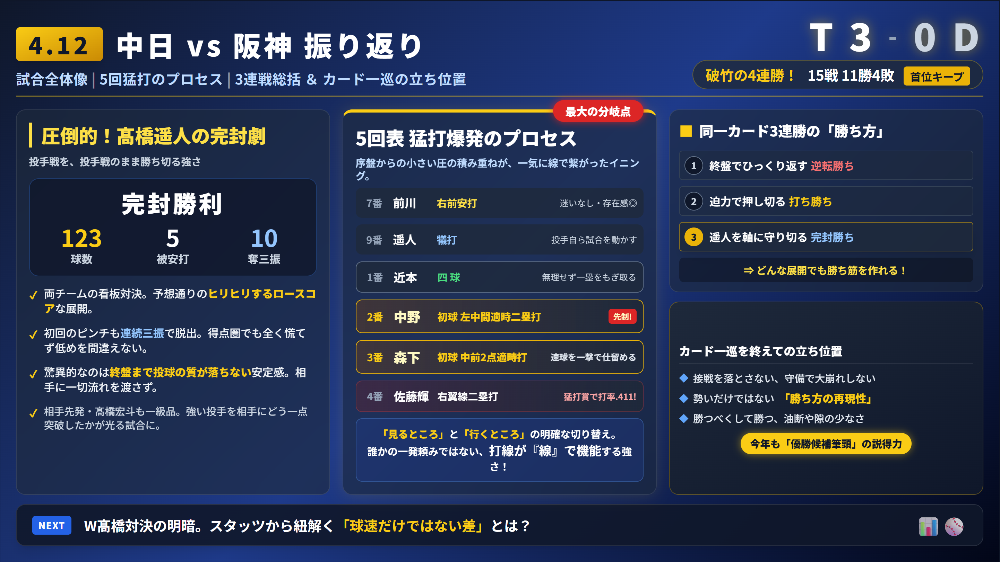

- 4月12日・中日戦で阪神が3対0で勝ち切った理由
- 勝負を決めた5回表に何が起きていたのか
- 高橋遥人と高橋宏斗の「同じ高橋でも違った部分」
- 森下翔太と佐藤輝明が速球にどう対応したのか
- 3連戦全体を通して見えた阪神の強さと今後の課題

阪神がまたひとつ、強い勝ち方を見せた。2026年4月12日の中日戦は、スコアだけを見れば3対0。しかし中身は、単なる完封勝利では片付けにくい。高橋遥人が9回を一人で投げ切り、打線は中盤のわずかなほころびを逃さず一気に3点を奪った。まさに「投手戦を投手戦のまま勝ち切った」試合だった。
このゲームが面白いのは、相手先発が高橋宏斗だったことだ。球威だけを比べれば、むしろ宏斗のほうが派手だった。それでも阪神は、5回に中野拓夢の先制二塁打、森下翔太の2点適時打で試合を動かした。
さらに、この勝利で阪神はバンテリンドーム3連戦を3連勝で締めた。4月10日は9回逆転勝ち、11日は長打で打ち勝ち、12日は完封勝ち。同じ3連勝でも、勝ち筋が全部違う。カード一巡を終えて11勝4敗。まだ4月とはいえ、「今年も優勝候補筆頭」と感じさせるだけの中身がある。
バンテリン3連戦の結果
3-GAME SERIES試合結果
GAME RESULT| 項目 | 内容 |
|---|---|
| 日付 | 2026年4月12日（日） |
| 対戦カード | 中日ドラゴンズ vs 阪神タイガース（3回戦） |
| 球場 | バンテリンドーム |
| スコア | 阪神 3 - 0 中日（阪神勝利） |
| 勝投手 | 高橋遥人（2勝0敗） |
| 敗投手 | 高橋宏斗（0勝2敗） |
| 阪神先発 | 高橋遥人（9回123球、5安打2四球10奪三振、無失点） |
| 中日先発 | 高橋宏斗（5回3失点、4回までは無失点） |
| チーム状況 | 4連勝、11勝4敗、貯金7、バンテリン初の同一カード3連勝 |
試合の流れ
GAME FLOW序盤：0対0でも、完全な押され気味ではなかった
序盤は完全に投手戦の空気だった。高橋宏斗は初回、2回を三者凡退に抑え、球威の高さを見せつけた。一方の高橋遥人も、初回に得点圏のピンチを背負いながら中日の中軸を抑え、立ち上がりから試合の主導権を渡さなかった。
4回まで阪神が無得点だったからといって、打線が沈黙していたわけではない。2回に佐藤輝明が安打、3回に前川右京が二塁打、4回には佐藤と大山悠輔が連続四球。阪神はじわじわと球数とプレッシャーを積み上げていた。
5回表：試合を決めたのは2死からの連続打
試合が動いたのは5回表。先頭の前川が右翼前打で出塁。高橋遥人が犠打をきっちり決めて二塁へ進めた。近本光司が四球を選び一・二塁。中野拓夢が左中間へ先制の適時二塁打を放ち、森下翔太がセンターへ2点適時打。2死から一気に3点を奪った。
この回の重要なポイントは、全員が同じ打席をしていないことだ。近本は待って四球を取った。一方で中野と森下は初球から仕留めた。阪神は「待つべき打席」と「行くべき打席」をはっきり分けており、その判断の良さが宏斗を苦しめた。
5回裏以降：3点で十分だと思わせた高橋遥人
5回に3点入った時点で、試合の流れは大きく阪神へ傾いた。それは中日打線が弱かったからではない。高橋遥人が「この3点で足りる」と思わせる投球を続けていたからだ。高橋は9回を5安打無失点、10奪三振。最後まで試合の空気を変えさせなかった。
勝負の分岐点
TURNING POINTS1. 初回の得点圏をゼロで抜けた高橋遥人
初回に先制を許していれば、試合の構図はかなり変わっていた。しかし高橋遥人は、立ち上がりのピンチで崩れず、序盤に「今日は簡単には点が取れない」と相手に思わせた意味は大きい。
2. 近本の四球で"あと一人"を消したこと
2死二塁からの近本の四球は、この試合の隠れた分岐点だ。宏斗にとっては「あと一人で終わる」場面だった。その出口を消され、一・二塁に広がった瞬間、投手側の心理的負担は一気に増した。そこから中野の先制打、森下の追撃打につながった。
3. 156キロ級を打ち返した森下の2点適時打
この試合の象徴は、森下の一打だ。156キロ級の真っすぐを中前へ運び、試合を決める2点適時打にした。球威が落ちたから打たれたのではなく、一級品の球を真正面から打ち返されたことが、中日には重かった。
選手ごとの評価
PLAYER RATINGS| 選手名 | 良かった点 | 評価 | 次戦への見方 |
|---|---|---|---|
| 高橋遥人 | 9回123球完封。初回・中盤のピンチでも崩れず、最後まで球質が落ちなかった | S | 「日曜日にいる価値」が非常に大きい。中6日運用が鍵 |
| 中野拓夢 | 5回2死から先制の適時二塁打。試合の空気を変える一打だった | A | 二番が「つなぐ」だけでなく「返せる」状態なら打線はさらに厚くなる |
| 森下翔太 | 2点適時打。156キロ級の真っすぐを打ち返し、試合を決めた | A+ | いまの阪神打線で最も「試合を決める打者」の空気がある |
| 佐藤輝明 | 3安打1四球、全4打席出塁。長打だけでなく出塁と安定感が目立つ | A+ | 「怖さを残したまま安定している」今年の4番像を維持できるか注目 |
| 前川右京 | 3回二塁打、5回先頭打。下位からチャンスを始めた | A | 打席内容は明らかに上向き |
| 近本光司 | 5回2死から四球で流れを広げた。目立たないが重い仕事 | A- | 打席の質が引き続き重要 |
データで見るポイント
DATA ANALYSIS| 分類 | 数字・事実 | 何を意味するか |
|---|---|---|
| チームスコア | 阪神3-0中日、阪神7安打、中日5安打 | 打ちまくった試合ではなく、少ない好機を阪神が取り切った試合 |
| 高橋遥人 | 9回123球、5安打、2四球、10奪三振、無失点 | 支配力と完投能力の高さ |
| 高橋宏斗 | 5回3失点、4回までは無失点 | 球威は十分だったが阪神打線の打席内容に中盤で押し返された |
| 5回表 | 前川安打→高橋犠打→近本四球→中野適時打→森下2点適時打 | この試合最大の分岐点。2死から点を取り切った |
| 佐藤輝明 | 3安打1四球、全4打席出塁 | ホームランだけでなく、出塁と長打を両立する4番になっている |
- 阪神は5回の2死から中野・森下の連続適時打で3点を奪い、中日を3対0で下した。
- 高橋遥人は9回123球の完封。球速の派手さより、試合支配力で高橋宏斗を上回った。
- 3連戦は逆転勝ち、打ち勝ち、完封勝ち。カード一巡11勝4敗は内容面でもかなり強い。